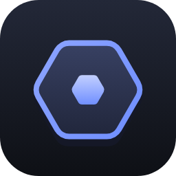

NorMacroPadYour shortcuts, one tap away.
NorMacroPad turns your phone into a pad of buttons that press keyboard shortcuts on your Windows PC: Excel, Photoshop, AutoCAD, Premiere, Zoom and more. It works over your own WiFi, with no account and nothing sent to the internet.
You need both: the phone app, and the free NorMacroPad program on your PC.
How it works
- Install NorMacroPad on your PC from the Microsoft Store.
- Install the phone app from Google Play.
- Scan the QR code the PC shows. Done: tap a key on the phone, and the PC presses it.